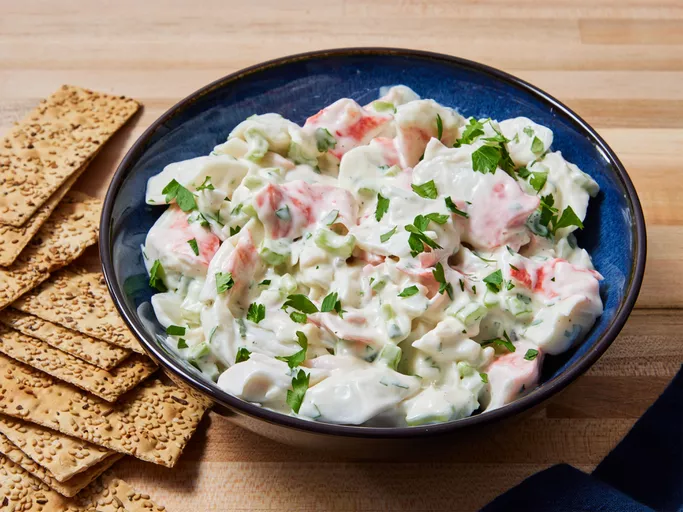

Crab Salad

Budget-Friendly Crab Salad
I came up with this crab salad recipe after trying for years to duplicate
one made at a seafood market where I used to work. This isn't the same,
but I actually like it better. It's so easy to make — the most
time-consuming part is separating the crab meat. When I make it, my
daughter takes the whole batch and hides so she can eat it all. Serve with
club-style crackers.
Ingredients
- 1 pound imitation crab meat, flaked
- ½ cup finely chopped celery, or more to taste
- ½ cup reduced-fat ranch dressing
- ⅓ cup mayonnaise
- 1 tablespoon white sugar, or to taste
- 1 teaspoon minced fresh parsley
Steps To Follow
- Gather all ingredients.
-
Gently mix crab meat, celery, ranch, mayonnaise, sugar, and parsley in a
salad bowl until thoroughly combined.
- Refrigerate, stirring occasionally, for 8 hours to overnight.
- Stir again just before serving. Enjoy!